소방설비산업기사(전기) (2009-03-01 기출문제)
1과목: 소방원론
1. 내화구조의 지붕에 해당하지 않는 구조는?
- 철근콘크리트조
- 철골철근콘크리트조
- 철재로 보강된 유리블록
- 무근콘크리트조
(정답률: 79%)

2. 다음 중 황린의 연소시에 주로 발생되는 물질은?
- P2O
- PO2
- P2O3
- P2O5
(정답률: 73%)
3. 인화점에 대한 설명으로 틀린 것은?
- 가연성 액체의 인화와 관계가 있다.
- 점화원의 존재와 연관된다.
- 연소가 지속적으로 확산될 수 있는 최저온도이다.
- 연료의 조성에 따라 달라진다.
(정답률: 56%)
4. 플래쉬오버(FLASH OVER)란 무엇인가?
- 건물 화재에서 가연물이 착화하여 연소하기 시작하는 단계
- 건물 화재에서 발생한 가연성 가스가 축적되다가 일순간에 화염이 크게 되는 현상
- 건물 화재에서 소방활동 진압이 끝난 단계
- 건물 화재에서 다 타고 더 이상 탈 것이 업서 자연 진화된 상태
(정답률: 90%)
5. 15℃ 의 물 10kg이 100℃의 수증기가 되기 위해서는 약 몇 kcal의 열랸이 필요한가?
- 850
- 1650
- 5390
- 6240
(정답률: 54%)
6. 다음 할론 소화약제 중 소화효과가 탁월하고 독성이 가장 약한 것은?
- 할론 1301
- 할론 104
- 할론 1211
- 할론 2402
(정답률: 71%)
7. 건축물의 주요구조부에서 제외되는 것은?
- 지붕
- 내력벽
- 바닥
- 사이기둥
(정답률: 81%)
8. 기체연료의 연소형태로서 연료와공기를 인접한 2개의 분출구에서 각각 분출시켜 계면에서 연소를 일으키게 하는 것은?
- 증발연소
- 자기연소
- 확산연소
- 분해연소
(정답률: 69%)
9. 물의 증발잠열을 이용한 주요 소화작용에 해당하는 것은?
- 희석작용
- 염 억제작용
- 냉각작용
- 질식작용
(정답률: 91%)
10. 화재의 원인이 되는 발화원으로 볼 수 없는 것은?
- 화학반응열
- 전기적인 열
- 기화잠열
- 마찰열
(정답률: 80%)
11. 피난대책의 일반적 원칙이 아닌 것은?
- 2방향의 피난통로를 확보한다.
- 피난경로는 간단 명료하게 한다.
- 피난설비는 고정설비를 위주로 설치한다.
- 원시적인 방법보다는 전자설비를 이용한다.
(정답률: 84%)
12. 가연성 물질이 되기 위한 조건으로 틀린 것은?
- 연소열이 많아야 한다.
- 공기와 접촉면적이 커야 한다.
- 산소와 친화력이 커야 한다.
- 활성화에너지가 커야 한다.
(정답률: 86%)
13. 화씨 122°F는 섭씨 몇 ℃인가?
- 40
- 50
- 60
- 70
(정답률: 77%)
14. 공기 중의 산소농도는 약 몇vol%인가?
- 15
- 21
- 27
- 31
(정답률: 90%)
15. 화재 종류별 표시색상이 잘못 연결된 것은?
- A급 - 백색
- B급 - 적색
- C급 - 청색
- D급 - 무색
(정답률: 72%)
16. 수분과 접촉하면 위험하며 경유, 유동파라핀 등과 같은 보호액에 보관하여야 하는 위험물은?
- 과산화수소
- 이황화탄소
- 황
- 칼륨
(정답률: 66%)
17. 제5류 위험물의 니트로화합물에 속하는 것은?
- 피크린산
- 니트로글리세린
- 휘발유
- 아세트알데히드
(정답률: 34%)
18. 질소가 가연물이 될 수 없는 이유는?
- 산소와 결합시 흡열반응을 하기 때문이다.
- 비중이 작기 때문이다.
- 연소시 화염이 없기 때문이다.
- 산소와의 반응이 불가능하기 때문이다.
(정답률: 81%)
19. 전기 부도체이며 소화 후 장비의 오손 우려가 낮기 때문에 전기실이나 통신실 등의 소화설비로 적합한 것은?
- 스프링클러설비
- 옥내소화전설비
- 포소화설비
- CO2 소화설비
(정답률: 76%)
20. A급화재의 가연물질과 관계가 없는 것은?
- 섬유
- 목재
- 종이
- 유류
(정답률: 84%)
2과목: 소방전기회로
21. 10kVA의 변압기 2대로 공급할 수 있는 최대의 3상 전력은 약 몇 [kVA] 인가?
- 14.1kVA
- 17.3kVA
- 28.3kVA
- 34.6kVA
(정답률: 76%)
22. 서지전압에 대한 회로 보호를 목적으로 주로 사용되는 것으로 가장 알맞은 것은?
- 바리스터
- 제너다이오드
- 서미스터
- SCR
(정답률: 73%)
23. 값이 같은 3개의 저항을 그림과 같이 접속하고 12V를 가할 때 3A 가 흐르면 R의 값은 몇 [Ω] 인가?
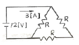
- 4Ω
- 6Ω
- 8Ω
- 12Ω
(정답률: 32%)
24. 4가 원자의 순수한 결정에 3가인 불순물을 넣어서 전자가 뛰어나간 빈자리인 정공(hole)을 만드는 반도체는?
- N형 반도체
- P형 반도체
- PN 접합 다이오드
- SCR
(정답률: 63%)
25. 정류기형 계기의 눈금이 지시하는 것은?
- 최대값
- 실효값
- 평균값
- 순시값
(정답률: 71%)
26. 기계적 추치제어계로 그 제어량이 위치, 각도 등인 것은?
- 자동조정
- 정치제어
- 프로그래밍제어
- 서보기구
(정답률: 72%)
27. 변압기의 정격 1차 전압이랑?
- 전부하를 걸었을 때의 1차전압
- 정격 2차 전압에 권수비를 곱한 것
- 무부하시의 1차전압
- 정격 2차 전압을 권수비로 나눈 것
(정답률: 68%)
28. 다음 중 검출용 스위치가 아닌 것은??
- 온도스위치
- 토글스위치
- 압력스위치
- 유량스위치
(정답률: 78%)
29. 전기장 E[V/m]내이 존재하는 전자 e에 작용하는 힘의 크기와 종류는?
- 크기는 e2E이며. 반발력
- 크기는 e2E이며. 흡인력
- 크기는 eE이며. 반발력
- 크기는 eE이며. 흡인력
(정답률: 33%)
30. 주어진 콘덴서 회로의 AB간 정전용량은 몇 [μF] 인가?
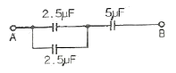
- 2.5μF
- 5.0μF
- 7.5μF
- 10μF
(정답률: 46%)
31. 가정에서 사용하는 전등선에 100V의 교류가 흐른다. 이 때 100V는 교류전압의 무엇을 나타내는 가?
- 순시값
- 평균값
- 실효값
- 최대값
(정답률: 68%)
32. 정전용량 2μF의 콘덴서를 직류 3000V로 충전할 때 이것에 축적되는 에너지는 몇 [J]인가?
- 6 J
- 9 J
- 12 J
- 18 J
(정답률: 51%)
33. 그림에서 분류기의 배율은? (단, G는 전류계의 내부저항임)
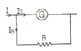
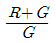
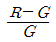
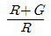
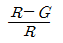
(정답률: 50%)
34. 정격 600W 전열기에 정격전압의 80%를 인가하면 전력은 몇 [W] 인가?
- 384W
- 486W
- 545W
- 614W
(정답률: 60%)
35. 교류의 크기를 표시할 때 실효값에 √2배를 하면 어떤 값이 되는가?
- 파고값
- 평균값
- 실효값
- 최대값
(정답률: 45%)
36. 그림과 같은 회로에 전압 100V를 가할 때 10Ω의 저항에 흐르는 전류는 몇 [A] 인가?
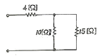
- 2A
- 4A
- 6A
- 8A
(정답률: 54%)
37. 다음의 함수 f(t)=Asin⍵t를 라플라스(Laplace) 변환하면?
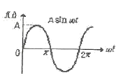
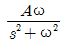
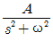
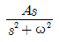
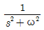
(정답률: 33%)
38. 정전기로 인한 화재를 막기 위한 조치로 옳은 것은?
- 비전도성 가연성액체 위험물 저장탱크를 접지시킨다.
- 전기동력 배선과 가스관과의 절연을 크게 한다.
- 스위치를 끊거나 넣을 때 생기는 스파크를 막기 위해 차단기류를 방폭구조로 만든다.
- 전기콘센트에 문어발식으로 플러그를 삽입 사용하지 않는다.
(정답률: 42%)
39. 도체의 단면에 150 C의 전하가 1분 동안 통과하였다면 이 도체에 흐른 전류의 크기는 몇 [A] 인가?
- 2.5A
- 5.0A
- 4500A
- 9000A
(정답률: 47%)
40. 다음 중 시퀀스 제어의 용어에 대한 설명으로 옳지 않은 것은?
- 자기유지란 계전기가 여자 된 후 동작기능이 계속 유지 되는 것
- 인터록회로란 하나의 계전기가 작동하면 다른 계전기는 작동하지 않도록 하는 것
- 소자란 계전기 코일에 전류가 투입되면 자화성질을 잃게 되는 것
- 타임차트란 시퀀스의 내용을 신호와 같이 그림으로 나타내는 것
(정답률: 58%)
3과목: 소방관계법규
41. 다음 특정소방대상물 중 교육연구시설에 포함되지 않는 것은?
- 자동차운전학원
- 초등학교
- 직업훈련소
- 도서관
(정답률: 57%)
42. 둘 이상의 위험물을 같은 장소에서 저장 또는 취급하는 경우에 있어서 당해 장소에서 저장 또는 취급하는 각 위험물의 수량을 그 위험물의 지정수량으로 각각 나누어 얻은 수의 합계가 얼마 이상인 경우 당해 위험물은 지정수량 이상의 위험물로 보는가?
- 0.5
- 0.8
- 1.0
- 1.5
(정답률: 62%)
43. 화재가 발생하거나 불이 번질 우려가 있는 소방대상물 및 토지를 일시적으로 사용하거나 그 사용의 제한 또는 소방활동에 필요한 처분을 할 수 있는 자로 옳지 않은 것은?
- 소방대장
- 소방서장
- 소방본부장
- 종합상황실장
(정답률: 67%)
44. 다음 중 의용소방대 설치대상지역이 아닌 것은?
- 시
- 읍
- 면
- 리
(정답률: 55%)
45. 제4류 위험물 경유의 지정수량으로 알맞은 것은?
- 200리터
- 500리터
- 1000리터
- 2000리터
(정답률: 54%)
46. 소방대상물의 방염 등과 관련하여 방염성능기준은 무엇으로 정하는가?
- 대통령령
- 행정안전부령
- 소방방재청훈령
- 소방방재청예규
(정답률: 55%)
47. 특정소방대상물의 소방시설에 대하여 설계ㆍ시공 또는 감리를 하고자 하는 자는?
- 관할 소방서장에게 소방시설업의 신고를 하여야 한다.
- 소방방재청장에게 소방시설업의 허가를 받아야 한다.
- 특별시장ㆍ광역시장 또는 도지사에게 소방시설업의 등록을 하여야 한다.
- 행정안전부장관에게 소방시설업의 신고를 하여야 한다.
(정답률: 58%)
48. 특정소방대상물 중 근린생활시설(일반목욕장 제외), 의료시설, 복합건축물 등은 연면적 몇 [m2] 이상인 경우에 자동화재탐지설비를 설치하여야 하는가?
- 400m2
- 600m2
- 1000m2
- 3500m2
(정답률: 57%)
49. 소방용수시설의 설치기준에 관한 사항 중 옳지 않은 것은?
- 주거지역에 설치하는 경우 소방대상물과의 수평거리를 140m 이하가 되도록 할 것
- 소방호스와 연결하는 소화전의 연결금속구의 구경은 65mm로 할 것
- 저수조는 지면으로부터 낙차가 4.5m 이하일 것
- 저수조에 물을 공급하는 방법은 상수도에 연결하여 자동으로 급수되는 구조일 것
(정답률: 63%)
50. 위험물 저장소 등의 설치자의 지위를 승계한 자는 승계한 날부터 며칠 이내에 시ㆍ도지사에게 그 사실을 신고하여야 하는가?
- 7일
- 14일
- 30일
- 60일
(정답률: 52%)
51. 함부로 버려두거나 그냥 둔 위험물의 소유자ㆍ관리자 또는 점유자의 주소와 성명을 알 수 없어, 일정 기간 게시 및 보관 후 이를 매각 또는 폐기하였다. 그 후에 위험물의 소유자가 보상을 요구할 경우 조치사항으로 올바른 것은?
- 매각한 경우에는 소유자와 협의를 거쳐 이를 보상하여야 하나, 폐기한 경우에는 보상하지 않는다.
- 매각한 경우에는 보상하지 아니하나, 폐기한 경우에는 소유자와 협의를 거쳐 이를 보상하여야 한다.
- 매각하거나 폐기된 경우 보상금액에 대하여 소유자와 협의를 거쳐 이를 보상하여야 한다.
- 매각하거나 폐기된 경우 보상금액에 대하여 소유자와 협의를 거쳐 보상하지 않는다.
(정답률: 55%)
52. 다음 ( ㉮ ), ( ㉯ )에 들어갈 내용으로 알맞은 것은?
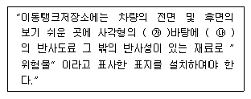
- ㉮ 흑색, ㉯ 황색
- ㉮ 황색, ㉯ 흑색
- ㉮ 백색, ㉯ 적색
- ㉮ 적색, ㉯ 백색
(정답률: 46%)
53. 소방본부장 또는 소방서장은 건축허가 등의 동의요구서류를 접수한 날부터 며칠 이내에 건축허가 등의 동의 여부를 회신하여야 하는가? (단, 허가 신청한 건축물 등의 연면적은 35000m2 이다.)(오류 신고가 접수된 문제입니다. 반드시 정답과 해설을 확인하시기 바랍니다.)
- 3일
- 7일
- 10일
- 14일
(정답률: 43%)
54. 지정수량 미만인 위험물의 저장 또는 취급에 관한 기술 상의 기준은 특별시ㆍ광역시 및 도의 무엇으로 정하는가?
- 예규
- 조례
- 훈령
- 안전기준
(정답률: 76%)
55. 소방시설공사업법령과 관련하여 성능위주설계를 하여야 할 특정소방대상물로 알맞은 것은? (단, 신축 건축물인 경우이다.)
- 아파트를 제외한 연면적이 10만 제곱미터 이상인 특정 소방대상물
- 아파트를 제외한 건축물의 높이가 70미터 이상인 특정소방대상물
- 연면적이 2만 제곱미터 이상인 철도역사ㆍ공항시설
- 하나의 건축물에 관련 법에 따른 영화상영관이 10개 이상인 특정소방대상물
(정답률: 54%)
56. 다음 중 소방시설공사의 설계와 감리에 관한 약정을 함에 있어서 그 대가를 산정하는 기준으로 알맞은 것은?
- 발주자와 도급자간의 약정에 따라 산정한다.
- 국가를 당사자로 하는 계약에 관한 법률에 따라 산정한다.
- 엔지니어링기술진흥법 제 10조의 규정에 따른 실비정약가산방식으로 산정한다.
- 민법에서 정하는 바에 따라 산정한다.
(정답률: 40%)
57. 소방방재청방ㆍ소방본부장 또는 소방서장은 화재가 발생한 때에는 화재의 원인 및 피해 등에 대하여 조사를 하여야 하는데 다음 중 화재조사의 시기로 알맞은 것은?
- 화재의 발견 및 통보 시점부터 실시되어야 한다.
- 소화활동과 동시에 실시되어야 한다.
- 화재진압이 완료된 후 즉시 실시되어야 한다.
- 화재현장에 도착 후 실시되어야 한다.
(정답률: 68%)
58. 다음 중 소방시설 설치유지 및 안전관리에 관한 법률 시행령에서 사용하는 피난층에 대한 용어의 정의로 알맞은 것은?
- 곧바로 지상으로 갈 수 있는 출입구가 있는 층
- 곧바로 지상으로 갈 수 있는 출입구가 있는 1층
- 곧바로 옥상으로 갈 수 있는 출입구가 있는 층
- 곧바로 옥상으로 갈 수 있는 출입구가 있는 꼭대기 층
(정답률: 71%)
59. 다음 중 2급 방화대상물의 방화관리자로 선임될 수 있는 경력요건으로 경력기간이 가장 짧은 것은?(오류 신고가 접수된 문제입니다. 반드시 정답과 해설을 확인하시기 바랍니다.)
- 소방공무원 근무경력
- 의용소방대원 근무경력
- 경찰공무원 근무경력
- 위험물안전관리법에 의한 자체소방대원 근무경력
(정답률: 54%)
60. 다음 중 특정소방대상물의 수용인원의 산정방법으로 옳지 않은 것은?
- 침대가 있는 숙박시설의 경우 당해 특정소방대상물의 종사자의 수에 침대의수(2인용 침대는 2인으로 산정한다.)를 합한 수
- 침대가 없는 숙박시설의경우 당해 특정소방대상물의 종사자의 수에 숙박시설의 바닥면적의 합계를 3m2로 나누어 얻은 수를 합한 수
- 강의실 용도로 쓰이는 소방대상물의 경우 당해 용도로 사용되는 바닥면적의 합계를 1.9m2로 나누어 얻은 수
- 문화집회시설의 경우 당해 용도로 사용되는 바닥면적의 합계를 2.6m2로 나누어 얻은 수
(정답률: 49%)
4과목: 소방전기시설의 구조 및 원리
61. 비상콘센트설비의 전원부와 외함 사이의 절연저항은 얼마 이상 이어야 하는가? (단, 직류 500V 절연저항계로 측정하는 경우이다.)
- 10Ω
- 20Ω
- 10MΩ
- 20MΩ
(정답률: 51%)
62. 접지형3극 플러그접속기(KS C 83⑤)를 사용하여야 하는 비상콘센트의 플럭접속기는?
- 단상교류 220V용
- 3상교류 220V용
- 단상교류 380V용
- 3상교류 380V용
(정답률: 40%)
63. 다음 장소 중 연기감지기를 설치하지 않아도 되는 것은?
- 수직거리 30m인 계단
- 보행거리 30m인 복도
- 엘리베이터 권상기실
- 반자의 높이 30m인 장소
(정답률: 59%)
64. 다음 중 자동화재속보설비의 속보기의 기능에 대한 설명으로 옳지 않은 것은?
- 수동으로 동작시키는 경우 20초 이내에 소방관서에 자동적으로 신호를 발하여 통보하되 3회이상 속보할 수 있어야 한다.
- 주전원의 정지로 예비전원으로 전환된 경우 주전원이 정상적으로 복귀하여도 수동으로 복귀하기 전까지는 예비전원에서 주전원으로 전환되어서는 아니된다.
- 예비전원은 자동적으로 충전되어야 하며 자동과충전방지장치가 있어야 한다.
- 예비전원은 감시상태를 60분간 지속항 후 10분이상 동작(화재속보 후 화재표시 및 경보를 10분간 유지)이 지속될 수 있는 용량이어야 한다.
(정답률: 56%)
65. 다음 중 복도통로유도등을 복도ㆍ통로 중앙부분의 바닥에 설치하여야 하는 지하층 또는 무창츰의 용도에 포함되지 않는 것은?
- 도매시장
- 종합병원
- 소매시장
- 여객자동차터미널
(정답률: 36%)
66. 자동화재탐지설비의 감지기 중 차동식스포트형 감지기 및 정온식스포트형 감지기의 성능을 겸한 것으로서 두 가지 성능 중 어느 한 기능이 작동되면 작동신호를 발하는 감지기는?
- 이온화식스포트형
- 광전식스포트형
- 보상식스포트형
- 연복합식스포트형
(정답률: 58%)
67. 사용전압 600V 이하인 경계전로의 누설전류를 검출하여 당해 소방대상물의 관계자에게 경보를 발하는 설비로서 변류기와 수신부로 구성된 것은?
- 누설전류경보기
- 누전경보기
- 경계전로경보기
- 전기누설경보기
(정답률: 59%)
68. 다음은 휴대용비상조명등 설치기준을 설명한 것으로 옳지 않은 것은?
- 숙박시설 또는 다중이용업소에는 객실 또는 영업장의 구획된 실마다 잘 보이는 곳에 1개 이상 설치
- 백화점에는 보행거리 50m 이내마다 3개 이상 설치
- 지하상가에는 보행거리 25m 이내 마다 3개 이상 설치
- 영화상영관에는 보행거리 25m 이내 마다 3개 이상 설치
(정답률: 57%)
69. 다음 중 비상경보설비의 발신기에 관한 설치기준으로 옳지 않은 것은?
- 지하구의 경우에는 발신기를 설치하지 아니할 수 있다.
- 발신기 위치표시등의 불빛은 부착면으로부터 15°이상의 범위안에서 부착지점으로부터 10m 이내의 어느 곳에서도 쉽게 식별할 수 있어야 한다.
- 소방대상물의 2개 층마다 설치하여야 한다.
- 조작스위치는 바닥으로부터 0.8m 이상 1.5m 이하의 높이에 설치하여야 한다.
(정답률: 62%)
70. 비상콘센트용 풀박스 등은 방청도장을 한 것으로서 두께는 몇 [mm] 이상의 철판으로 하여야 하는가?
- 1.0mm
- 1.2mm
- 1.6mm
- 2.5mm
(정답률: 71%)
71. 비상방송설비는 기동장치에 따른 화재신고를 수신한 후 필요한 음량으로 화재발생상황 및 피난에 유효한 방송이 자동으로 개시될 때까지 소요시간은?
- 10초 이하
- 30초 이하
- 60초 이하
- 120초 이하
(정답률: 73%)
72. 소방시설용비상전원수전설비에서 소방회로 전용의 것으로서 분기개폐기, 분기과전류차단기, 그 밖의 배선용기기 및 배선을 금속제 외함에 수납한 것은?
- 전용배전반
- 전용수전반
- 전용분전반
- 전용기전반
(정답률: 75%)
73. 다음 중 피난기구의 위치를 표시하는 표지에 대한 설명으로 옳지 않은 것은?
- 피난기구를 설치한 가까운 곳에 부착하였다.
- 발광식 표지를 부착하였다.
- 축광식 표지를 부착하였다.
- 방사성물질을 사용하는 위치표지는 사용할 수 없다.
(정답률: 71%)
74. 다음 ( ㉮ ), ( ㉯ )에 들어갈 내용으로 알맞은 것은?
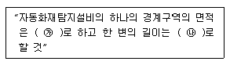
- ㉮ 600m2 이하 ㉯ 50m 이하
- ㉮ 1000m2 이하 ㉯ 50m 이하
- ㉮ 600m2 이하 ㉯ 60m 이하
- ㉮ 1000m2 이하 ㉯ 60m 이하
(정답률: 66%)
75. 높이 5m인 소방대상물의 주요구조부가 내화구조인 부분에 정온식스포트형감지기 특종을 설치하는 경우 바닥면적 몇 [m2] 마다 1개 이상 설치하여야 하는가?
- 15m2
- 25m2
- 35m2
- 45m2
(정답률: 39%)
76. 피난구 또는 피난경로로 사용되는 출입구를 표시하여 피난을 유도하는 표지는?
- 피난통로유도표지
- 피난구유도표지
- 거실통로유도표지
- 피난경로유도표지
(정답률: 64%)
77. 무선통신보조설비의 분배기 등을 설치하는 경우 임피던스의 기준은?
- 5Ω
- 50Ω
- 5MΩ
- 50MΩ
(정답률: 53%)
78. 지하4층, 지상5층의 소방대상물에 비상방송설비를 설치하였다. 지하4층에서 발화한 경우 우선적으로 경보를 하여야 할 층은?
- 지하 3층, 지하 4층
- 지하 2층, 지하 3층, 지하 4층
- 지하 1층, 지하 2층, 지하 3층, 지하 4층
- 지하 2층, 지하 3층, 지하 4층, 지상 1층
(정답률: 69%)
79. 다음 ( ㉮ ), ( ㉯ )에 들어갈 내용으로 알맞은 것은?
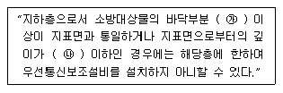
- ㉮ 1면, ㉯ 1m
- ㉮ 2면, ㉯ 1m
- ㉮ 1면, ㉯ 2m
- ㉮ 2면, ㉯ 2m
(정답률: 78%)
80. 다음 중 비상방송설비의 상용전원 설치 기준으로 적합한 것은?
- 전원은 전기가 정상적으로 공급되는 축전지 또는 교류 전압의 옥내간선으로 하고 전원가지의 배선은 전용으로 한다.
- 전원은 전기가 정상적으로 공급되는 축전지로서 전원까지의 배선은 겸용으로 한다.
- 전원은 전기가 정상적으로 공급되는 교류전압의 옥내 간선으로서 전원까지의 배선은 겸용으로 한다.
- 개폐기에는 “비상용” 이라고 표시한 표지를 한다.
(정답률: 52%)